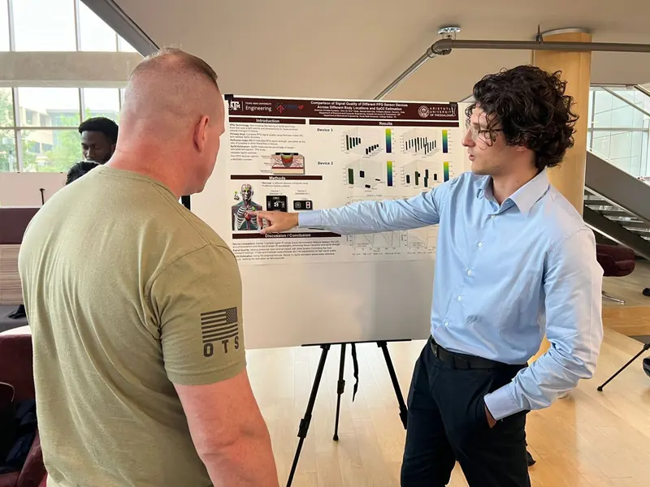
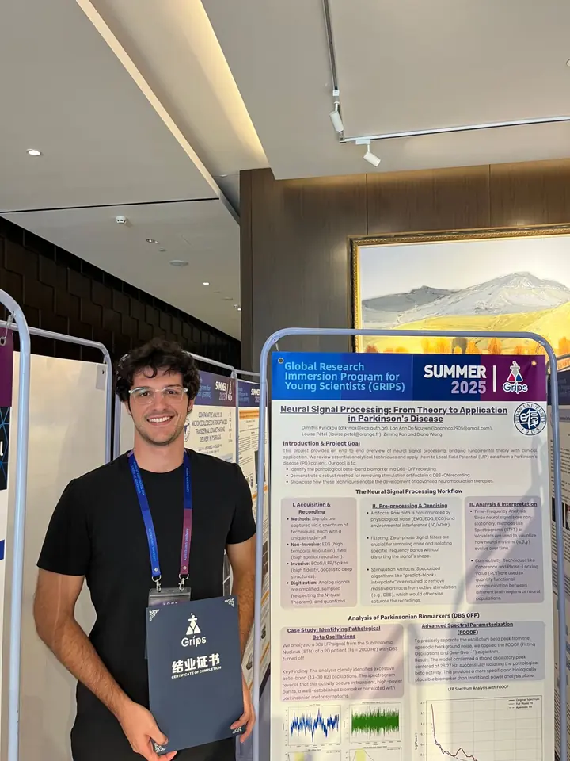
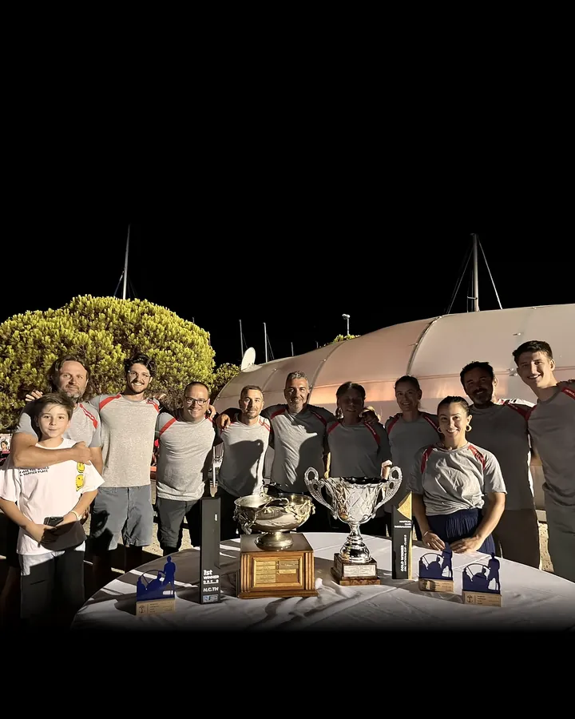

Engineering Human Potential.
Dimitrios Kyriakou · Electrical & Computer Engineer · Health, medicine & the brain
01 The engineer
Three years of electrical and computer engineering at Aristotle University of Thessaloniki. I was good at it. I just hadn't found what it was for.
Rigour
02 The click
Then came Biomedical Technology. For the first time, engineering had a patient on the other side. I took the top grade, and I kept reading long after the syllabus ended.
Curiosity
03 Texas · 2022–2024
I already knew the way to Texas. In 2022 our team flew there as finalists of Invent for the Planet and won the People's Choice award. Two years later I went back on my own terms: I looked for a professor in biomedical engineering and found Prof. Gerard Coté's optical biosensing lab. I ran a study on wearable pulse sensors and presented it as first author.
Initiative


04 Shanghai · 2025
The deeper I went, the more one organ pulled me in: the brain. A year later, with Prof. Coté's recommendation, I was at Fudan University in Shanghai, working on brain signals from a Parkinson's patient under deep brain stimulation.
Depth

05 The thesis · 2026
Back home, I brought it all together. My diploma thesis asks whether the pulse a wrist-worn sensor records in daily life can reveal Parkinson's. 249 million windows of signal, four models, one honest answer: yes for diagnosed Parkinson's (+0.30 ROC-AUC over age and sex), not yet for the earliest stage.
- Noisy signal
- Clean beats
- 27 indices
- 180 days × 11 statistics
- One row per person
- Four models
- +0.30
Persistence
06 Discipline
None of this started in a lab. It started on a mat, at six years old. Twelve years of Taekwon-Do: five Greek titles and a European bronze. Later came the sea, and first place offshore as part of a crew.
Discipline


07 Builder
I like building things people actually use. I founded ART.IO, which turns real spaces into 3D walkthroughs, and I built and run Elysium Retreat, my own rental in Thessaloniki.
ART.IO (opens in a new tab)Elysium Retreat (opens in a new tab)
Drive
08 Next
Health is a field without edges: medical devices, the body, the brain, and the people behind every diagnosis. My next role doesn't have to match my thesis. It has to let me create and discover in health.
Let's talk.
Ambition